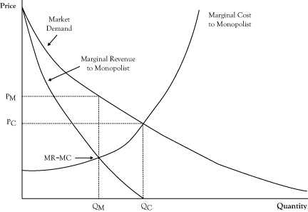

Although highly competitive markets similar to the models in the previous chapter are desirable for an economy and occur for some goods and services, many important markets deviate significantly from the assumptions made in that discussion and operate differently. In this chapter we will consider some concepts and theories that help explain some of these other markets.
The perfect competition model (and its variants like monopolistic competition and contestable markets) represents an ideal operation of a market. As we noted in Chapter 6 "Market Equilibrium and the Perfect Competition Model", not only do the conditions of these models encourage aggressive competition that keeps prices as low as possible for buyers, but the resulting dynamics create the greatest value for all participants in the market in terms of surplus for consumers and producers.
Some markets resemble perfect competition more than others. Agricultural markets, particularly up through the beginning of the 20th century, were viewed as being close to a real-world version of a perfectly competitive market. There were many farmers and many consumers. No farmer and no consumer individually constituted sizeable fractions of the market activity, and both groups acted as price takers. With a modest amount of capital, one could acquire land, equipment, and seed or breeding stock to begin farming, especially when the United States was expanding and large volumes of unused land were available for purchase or homesteading. Although some farmers had better land and climate or were better suited for farming, the key information about how to farm was not impossible to learn.
However, in recent decades circumstances have changed, even for farming, in a way that deviates from the assumptions of perfect competition. Now farmers are unlikely to sell directly to consumers. Instead, they sell to food processing companies, large distributors, or grocery store chains that are not small and often not price takers. Many farming operations have changed from small, family-run businesses to large corporate enterprises. Even in markets where farming operations are still relatively small, the farmers form cooperatives that have market power. Additionally, the government takes an active role in the agriculture market with price supports and subsidies that alter farm production decisions.
One reason so few markets are perfectly competitive is that minimum efficient scales are so high that eventually the market can support only a few sellers. Although the contestable market model suggests that this factor alone does not preclude aggressive price competition between sellers, in most cases there is not really free entry for new firms. A new entrant will often face enormous startup capital requirements that prohibit entry by most modest-sized companies or individual entrepreneurs. Many markets are now influenced by brand recognition, so a new firm that lacks brand recognition faces the prospect of large promotional expenses and several periods with losses before being able to turn a profit. To justify the losses in the startup period, new entrants must expect they will see positive economic profits later to justify these losses, so the market is not likely to reach the stage of zero economic profit even if the new entrants join.
Due to economies of scope, few sellers offer just one product or are organized internally such that production of that one product is largely independent of the other products sold by that business. Consequently, it will be very difficult for a competitor, especially a new entrant in the market, to readily copy the breadth of operations of the most profitable sellers and immediately benefit from potential economies of scope.
Sellers that are vertically integrated may have control of upstream or downstream markets that make competition difficult for firms that focus on one stage in the value chain. For example, one firm may have control of key resources required in the production process, in terms of either the overall market supply or those resources of superior quality, making it hard for other firms to match their product in both cost and quality. Alternatively, a firm may control a downstream stage in the value chain, making it difficult for competitors to expand their sales, even if they price their products competitively.
As we will discuss in the next chapter, markets are subject to regulation by government and related public agencies. In the process of dealing with some perceived issues in these markets, these agencies will often block free entry of new firms and free exit of existing firms.
In our complex technological world, perfect information among all sellers and buyers is not always a reasonable assumption. Some sellers may possess special knowledge that is not readily known by their competition. Some producers may have protection of patents and exclusive rights to technology that gives them a sustained advantage that cannot be readily copied. On the buyer side, consumers usually have a limited perspective on the prices and products of all sellers and may not always pay the lowest price available for a good or service (although the Internet may be changing this to some degree).
Finally, for the perfect competition model to play out according to theory, there needs to be a reasonable level of stability so that there is sufficient time for the long-run consequences of perfect competition to occur. However, in our fast-changing world, the choices of goods and services available to consumers, the technologies for producing those products and services, and the costs involved in production are increasingly subject to rapid change. Before market forces can begin to gel to create price competition and firms can modify their operations to copy the most successful sellers, changes in circumstances may stir enough such that the market formation process starts anew.
Often, the main deterrent to a highly competitive market is market power possessed by sellers. In this section, we will consider the strongest form of seller market power, called a monopolyThe strongest form of seller market power; a market structure in which there is only one seller with market power.. In a monopoly there is only one seller, called a monopolistThe one seller that possesses market power..
Recall that in perfect competition, each firm sees the demand curve it faces as a flat line, so it presumes it can sell as much as it wants, up to its production limit, at the prevailing market price. Even though the overall market demand curve decreases with increased sales volume, the single firm in perfect competition has a different perception because it is a small participant in the market and takes prices as given. In the case of flat demand curves, price and marginal revenue are the same, and since a profit-maximizing producer decides whether to increase or decrease production volume by comparing its marginal cost to marginal revenue, in this case the producer in perfect competition will sell more (if it has the capability) up the point where marginal cost equals price.
In a monopoly, the demand curve seen by the single selling firm is the entire market demand curve. If the market demand curve is downward sloping, the monopolist knows that marginal revenue will not equal price. As we discussed in Chapter 2 "Key Measures and Relationships", when the demand curve is downward sloping, the marginal revenue corresponding to any quantity and price on the demand curve is less than the price (see Figure 7.1 "Graph Showing the Optimal Quantity and Price for a Monopolist Relative to the Free Market Equilibrium Price and Quantity"). Because the condition for optimal seller profit is where marginal revenue equals marginal cost, the monopolist will elect to operate at a quantity where those two quantities are in balance, which will be at volume marked QM in Figure 7.1 "Graph Showing the Optimal Quantity and Price for a Monopolist Relative to the Free Market Equilibrium Price and Quantity".
Since the monopolist has complete control on sales, it will only sell at the quantity where marginal revenue equals marginal cost but will sell at the higher price associated with that quantity on the demand curve, PM, rather than the marginal cost at a quantity of QM.
Figure 7.1 Graph Showing the Optimal Quantity and Price for a Monopolist Relative to the Free Market Equilibrium Price and Quantity
If the marginal cost curve for the monopolist were instead the combined marginal cost curves of small firms in perfect competition, the marginal cost curve would correspond to the market supply curve. The perfect competition market equilibrium would occur at a volume QC, with a price PC. The monopolist could afford to function at this same volume and price and may even earn some economic profit. However, at this volume, marginal cost is greater than marginal revenue, indicating greater profit by operating at a lower volume at a higher price. The highest profit will result from selling QM units at a price of PM. Unfortunately, consumers do worse at the monopolist’s optimal operation as they pay a higher price and purchase fewer units. And as we noted in the previous chapter, the loss in consumer surplus will exceed the profit gain to the monopolist. This is the main reason monopolies are discouraged, if not outlawed, by governments.
Unless a monopoly is allowed to exist due to a government license or protection from a strong patent, markets have at least a few sellers. When a market has multiple sellers, at least some of which provide a significant portion of sales and recognize (like the monopolist) that their decisions on output volume will have an effect on market price, the arrangement is called an oligopolyA market in which there are multiple sellers, at least some of which provide a significant portion of sales and recognize that their decisions on output volume have an effect on market price..
At the extreme, sellers in an oligopoly could wield as much market power as a monopolist. This occurs in an oligopoly arrangement called a cartelAn arrangement in which sellers coordinate their activities so well that they behave in effect like divisions of one enterprise, rather than as competing businesses that make independent decisions on quantity and price., where the sellers coordinate their activities so well that they behave in effect like divisions of one enterprise, rather than as a competing business, that make independent decisions on quantity and price. (You may be familiar with the term cartel from the OPEC oil exporting group that is frequently described as a cartel. However, though OPEC has considerable market power and influence on prices, there are oil exporters that are not in OPEC, and internally OPEC only sets member targets rather than fully coordinating their operations.)
In theory, a cartel would operate at the same production volume and price as it would if its productive resources were all run by a monopolist. In a cartel, every member firm would sell at the same price and each firm would set its individual production volume such that every firm operates at the same marginal cost.
For the same reason that monopolies are considered harmful, cartels are usually not tolerated by governments for the regions in which those markets operate. Even the collusionThe process through which firms agree to operate at the same production volume and price; it is illegal in many countries. that is a necessary component of a true cartel is illegal.
However, although cartels could theoretically function with the same power as a monopolist, if the cartel truly contains multiple members making independent decisions, there is a potential instability that can undo the cartel arrangement. Because monopolists gain added profit by reducing production volume and selling at a price above marginal cost, individual members may see an opportunity to defect, particularly if they can do so without being easily detected. Since the cartel price will be well above their marginal cost, they could profit individually by increasing their own production. Of course, if the defection is discovered and the other members retaliate by increasing their volumes as well, the result could be a substantially lower market price and lower economic profits for all cartel members.
Another problem for cartels is how to divide the profits. Suppose a cartel had two member firms, A and B. Firm A has more efficient facilities than Firm B, so the cartel solution will be to allow Firm A to provide the bulk of the production volume. However, if Firm A claims its share of the profits should be proportional to its share of the production volume, Firm B may object to voluntarily withholding its production only to allow to Firm A to grab most of the sales and profit, and the arrangement could end.
Also, since optimal cartel operation means that all firms set production so all have the same marginal cost, the firms need to share internal information for the cartel to determine the total volume where marginal revenue equals marginal cost and how that volume gets divided between firms. Again, some firms may have the incentive to keep the details of their operations private from other firms in the cartel.
Oligopolies exist widely in modern economies. However, due to the reasons just cited, most do not function as cartels. Still, since these markets have relatively few sellers and each has a significant share of market sales, in many cases the total market production by oligopoly firms is less than would be expected if the market were perfectly competitive, and prices will be somewhat higher.
From the point of theory, the expected operation of the firm in perfect competition or in monopoly/cartel is straightforward. Assuming the firm in the perfect competition sufficiently understands its production costs, it will increase volume up to the point where its marginal cost exceeds the price. For a monopolist or cartel, production should increase up to point where marginal cost equals marginal revenue.
Oligopolies fall somewhere in between perfect competition and a cartel. However, the prescription of how to set optimal production volume is considerably more complex than either of the extremes. Like the monopolist, the oligopoly firm is aware that significant changes in its production level will have a significant effect on the market supply quantity, requiring a change in the market price to be in agreement with a downward sloping demand curve. However, while the firm is aware its production decisions will affect the market price, it is difficult to forecast the actual impact on price, even if the firm knows the behavior of the market demand curve.
A major reason for the complexity in determining the optimal production level is that the firm does not know how its oligopoly competitors will respond to its production decisions. For example, suppose a firm looks at the current market price and decides based on the market demand curve that it could increase its production volume by 1000 units per day and make a greater profit, even if the price dropped according to the market demand curve. Other sellers in the market will see the action taken and may decide that if the price is dropping and market demand is increasing that they could benefit by increasing their production to take advantage. As a consequence, the total market volume may increase more than expected, prices will drop more than expected, and the resulting gain in profit will be less than what the initial firm expected when it did its analysis.
Trying to figure out how to deal with reactions of other sellers not only is a vexing problem for sellers in oligopolies but has been a difficult challenge for academic economists who try to develop theories of oligopoly. The scholarly literature of economics is filled with elaborate mathematical models that attempt to address oligopoly operation. Next we will consider some of the insights of these analyses without the mathematics.
One approach that economists have used to model the behavior of oligopoly firms, known as the Bertrand modelAn approach that assumes all firms can anticipate the prices that their competitors will charge and that each firm can decide what production level and price leads to the highest profit it can achieve; also called price competition. or price competition, is to assume all firms can anticipate the prices that will be charged by their competitors. If firms can reasonably anticipate the prices that other firms will charge and have a reasonable understanding of market demand, each firm can determine how customers would react to its own price and decide what production level and price leads to highest profit. The soft drink market is an example of a market that could operate in this manner.
Another approach for modeling oligopoly behavior, known as the Cournot modelAn approach that assumes all firms can determine the upcoming production levels or operating capacities of their competitors and can make adjustments to price to use the committed capacity effectively. or quantity competition, is to assume all firms can determine the upcoming production levels or operating capacities of their competitors. For example, in the airline industry, schedules and gate arrangements are made months in advance. In essence, the airlines have committed to a schedule, their flying capacities are somewhat fixed, and what remains is to make the necessary adjustments to price to use the committed capacity effectively.
In comparing models where firms anticipate price to those where firms anticipate production volume or capacity commitment, firms that anticipate quantity levels tend to operate at lower production levels and charge higher prices. This occurs because in a quantity competition model, firms subtract the planned operation of their rivals from the market demand curve and assume the residual is the demand curve they will face. This leads to the presumption that the price elasticity of their own demand is the same as the price elasticity of overall market demand, whereas in price competition models the elasticity of the firm’s own demand is seen as greater than the price elasticity of overall market demand (as was the case in the perfect competition model).
The number of selling firms also has an effect on the likely outcome of oligopoly competition. As the number of firms increases, the market equilibrium moves toward the equilibrium that would be expected in a perfectly competitive market of firms with the same aggregate production resources.
Another issue that can affect the prices and quantity volumes in an oligopoly market is the existence of a “leader” firm. A leader firmIn an oligopoly market, a firm that makes a decision on either its price or its capacity commitment before the other firms, anticipating how the other firms in the market will react. will make a decision on either its price or its volume/capacity commitment and then the remaining “follower firmsIn an oligopoly market, firms that react to the price or capacity decision of a leader firm.” determine how they will react. An example of a leader firm in an industry might be Apple in the portable media player market. Apple decides on how it will price its iPod products and other manufacturers then decide how to price their products. Although the leader firm commits first in these models, in order to determine its own best course of action, it needs to anticipate how the follower firms will react to its decision.
Sellers in oligopolies can limit competition by driving out competitors, blocking entry by new competitors, or cooperating with other sellers with market power to keep prices higher than would be the case in a market with strong price competition. In order for sellers to exercise market power, either the market will have fairly few selling firms or there will be some selling firms that account for a large portion of all the market sales. When this happens, the market is said to have high seller concentration. Although high seller concentration in itself is not sufficient for exercise of seller power, it is generally a necessary condition and constitutes a potential for the exercise of seller power in the future. In this section, we will consider two numerical measures of market concentration: concentration ratios and the Herfindahl-Hirschmann Index (HHI).
Both measures of seller concentration are based on seller market sharesThe percentage of all sales that are purchased from a particular firm.. A firm’s market share is the percentage of all market sales that are purchased from that firm. The highest possible market share is 100%, which is the market share of a monopolist. Market shares may be based either on the number of units sold or in terms of monetary value of sales. The latter use of monetary value is convenient when there are variations in the good or service sold and different prices are charged.
Concentration ratiosThe sum of the market shares of the firms having the highest market shares in a market; if the value for one firm is above 90, that firm may function as a monopoly. are the result of sorting all sellers on the basis of market share, selecting a specified number of the firms with the highest market shares, and adding the market shares for those firms. For example, the concentration ratio CR4 is the sum of the market shares for the four largest firms in terms of volume in a market and CR8 is the sum of the eight largest firms in terms of volume. The U.S. Census Bureau periodically publishes concentration ratios for different industries in the United States.See U.S. Census Bureau (2010).
Suppose a market has 10 sellers with market shares (ranked from high to low) of 18%, 17%, 15%, 13%, 12%, 8%, 7%, 5%, 3%, and 2%. The CR4 ratio for this market would be 63 (18 + 17 + 15 + 13), and the CR8 ratio would be 95 (18 + 17 + 15 + 13 + 12 + 8 + 7 + 5).
Although concentration ratios are easy to calculate and easily understood, there are two shortcomings. First, the number of firms in the ratio is arbitrary. There is no reason that a four-firm concentration ratio indicates concentration potential any better than a three-firm or five-firm concentration ratio. Second, the ratio does not indicate whether there are one or two very large firms that clearly dominate all other firms in market share or the market shares for the firms included in the concentration ratio are about the same.
An alternative concentration measure that avoids these problems is the HHIThe sum of the squared individual market shares of all the firms in a market; a value of less than 1000 indicates that a market should be reasonably competitive, whereas a value over 8000 indicates that the market has a firm that may function like a monopoly.. This index is computed by taking the market shares of all firms in the market, squaring the individual market shares, and finally summing them. The squaring has the effect of amplifying the larger market shares. The highest possible value of the HHI is 10,000, which occurs in the case of a monopoly (10,000 = 1002). If, on the other hand, you had a market that had 100 firms that each had a market share of 1%, the HHI would be 100 (1 = 12, summed 100 times). For the previous 10-firm example, the HHI would be 1302. Although there is no inherent reason for squaring market shares, the HHI includes all firms in the computation (avoiding the issue of how many firms to include) and reflects the variation in magnitude of market shares.
As far as interpreting these concentration measures, the following statements provide some guidance on the potential for market power by sellers:
Again, a high concentration measure indicates a potential for exploitation of seller power but not proof it will actually happen. Another important caution about these measures is that the scope of the market needs to be considered. In the case of banking services, even with the mergers that have resulted in higher seller concentration, if you look at measures of bank concentration at the national level, there seems be a loose oligopoly. However, if you limit the scope to banking in a single city or region, it is very likely that only few banks serve those areas. There can be modest concentrations when examining national markets but high concentration at the local level.
In recent decades, economists have employed the applied mathematical tools of game theoryApplied mathematical tools that are used to describe strategic behavior in oligopolies. to try to capture the dynamics of oligopoly markets. The initial research papers are generally abstract and very technical, but the acquired insights of some of this research have been presented in textbooks geared to nontechnical readers.A text that applies game theory to management is Brandenburger and Nalebuff (1996). Game theory is outside the scope of this text, but we will consider some of the insights gained from the application of game theory in discussions about strategy in this and the following sections.
In this section, we will consider the economics underlying some of pricing strategies used by firms in monopolies and tight oligopolies.
Yield managementA pricing strategy in which a firm changes prices frequently in order to extract higher prices from customers and make it more difficult for other firms to compete on price.. Another method for taking advantage of the power to set prices is yield management, where the firm abandons the practice of setting a fixed price and instead changes prices frequently. One goal is to try to extract higher prices from customers who are willing to pay more for a product or service. Normally, with a fixed announced price, customers who would have been willing to pay a significantly higher price get the consumer surplus. Even if the firm employs third-degree price discrimination and charges different prices to different market segments, some customers realize a surplus from a price well below the maximum they would pay. Using sophisticated software to continuously readjust prices, it is possible to capture higher prices from some of these customers. Yield management can also make it more difficult for other firms to compete on the basis of price since it does not have a known, fixed price to work against.
A good example of yield management is the airline industry. Airlines have long employed price discrimination in forms of different classes of customers, different rates for flyers traveling over a weekend, and frequent flyer programs. However, in recent years, the price to buy a ticket can change daily, depending on the amount of time until the flight occurs and the degree to which the flight has already filled seats.
However, economists have pointed out that customers may sense this strategy, and if patient, the customer can wait and pay a much lower price than the perceived value of the item. Even if the firm has little competition from other firms, a firm may find itself in the interesting situation of competing with itself in other production periods. In theoretical analyses of monopolies that sold durable goods, it has been demonstrated that when durable goods last a long time and customers are patient, even a monopolist can be driven to price items at marginal cost.The durable goods problem is discussed in Kreps (2004).
One response to the durable goods dilemma is to sell goods with shorter product lives so that customers will need to return sooner to make a purchase. U.S. car manufacturers endeavored to do this in the middle of the 20th century but discovered that this opened the door for new entrants who sold cars that were designed to last longer.
Another response is to rent the use of the durable good rather than sell the good outright. This turns the good into a service that is sold for a specified period of time rather than a long-lived asset that is sold once to the customer (for at least a long time) and allows more standard oligopoly pricing that is applied for consumable goods and services. This arrangement is common with office equipment like copiers.
Oligopoly firms also use a number of strategies that involve measures other than pricing to compete and maintain market power. Some of these strategies try to build barriers to entry by new entrants, whereas the intention of other measures is to distinguish the firm from other existing competitors.
AdvertisingA means of increasing the likelihood a firm's product or service is among those actually considered by consumers.. As we noted in Chapter 3 "Demand and Pricing", most firms incur the expense of advertising. To some extent, advertising is probably necessary because buyers, particularly household consumers, face a plethora of goods and services and realistically can actively consider only a limited subset of what is available. Advertising is a means of increasing the likelihood a firm’s product or service is among those services actually considered.
When the firm is an upstream seller in a value chain with downstream markets, advertising may be directed at buyers in downstream markets. The intent is to encourage downstream buyers to look for products that incorporate the upstream firm’s output. An example of such advertising is in pharmaceuticals, where drug manufacturers advertise in mass media with the intent of encouraging consumers to request a particular drug from their physicians.
In tight oligopolies, firms may boost the intensity of advertising well beyond the amount needed to inform buyers of the existence of their goods and services. Firms may advertise almost extravagantly with the idea of not only establishing brand recognition but making strong brand recognition essential to successful competition in the market. Once strong brand recognition takes hold in the market, new firms will need to spend much more to establish brand recognition than existing firms spend to maintain brand recognition. Hence new entrants are discouraged by what is perceived as a high startup fee, which is a type of barrier to entry.
Excess capacityA means of competing in which a firm invests in a very high production volume in order to convince other firms that a lower price tactic will not succeed.. Ordinarily a firm will plan for a capacity that is sufficient to support the production volume. Because capacity is often planned in advance and actual production volume may vary from period to period, the firm may have some excess capacity in some periods. And since there is inherent uncertainty in future demand, firms may even invest in capacity that is never fully utilized.
However, firms in oligopolies may invest, or partially invest, in capacity well beyond what is needed to cover fluctuations in volume and accommodation of uncertainty as a means of competing. If the sellers in an oligopoly have been successful in collectively holding back on quantity to drive up the price and profits, since the price is well above average cost, there is an opportunity for one firm to offer the product at a lower price, attract a sizeable fraction of the new customers attracted by the lower price, and make a sizeable individual gain in profit. This gambit may come from a new entrant or even an existing seller. This tactic may work, at least for a time, if the firm introducing the lower price does it by surprise and the other firms are not prepared to ramp up production rapidly to match the initiator’s move.
One way to protect against an attack of this nature is to have a significant amount of excess capacity, or at least some additional capacity that could be upgraded and brought online quickly. The firm doing this may even want to clearly reveal this to other sellers or potential sellers as a signal that if another firm were to try an attack of this nature, they are prepared to respond quickly and make sure they take advantage of the increased sales volume.
Reputation and warrantiesA strategy in which a firm uses advertising to make an ongoing presence in a market desired by customers so as to distinguish themselves from short-term sellers.. As a result of fluctuations in cost or buyer demand, being a seller in a market may be more attractive in some periods than others. During periods that are lucrative for being a seller, some firms may be enticed to enter on a short-term basis, with minimal long-term commitments, enjoy a portion of the spoils of the favorable market, and then withdraw when demand declines or costs increase.
Firms that intend to remain in the market on an ongoing basis would prefer that these hit-and-run entrants not take away a share of the profits when the market is attractive. One measure to discourage this is to make an ongoing presence desired by the customer so as to distinguish the product of the ongoing firms from the product of the short-term sellers. As part of advertising, these firms may emphasize the importance of a firm’s reputation in providing a quality product that the firm will stand behind.
Another measure is to make warrantiesA promise to repair or replace a product that is only of value to the buyer if the seller is likely to be available when the buyer makes a claim on the promise. a part of the product, a feature that is only of value to the buyer if the seller is likely to be available when a warranty claim is made. Like high-cost advertising, even the scope of the warranty may become a means of competition, as is seen in the automobile industry where warranties may vary in time duration, number of driven miles, and systems covered.
Product bundlingFirms take advantage of natural production economies of scope by selling complementary products together at a lower cost.. In Chapter 3 "Demand and Pricing", we discussed the notion of complementary goods and services. This is a relationship in which purchasers of one good or service become more likely to purchase another good or service. Firms may take advantage of complementary relationships by selling products together in a bundle, where consumers have the option to purchase multiple products as a single item at lower total cost than if the items were purchased separately. This can be particularly effective if there are natural production economies of scope in these complementary goods. If competitors are unable to readily match the bundled product, the firm’s gain can be substantial.
A good example of successful product bundling is Microsoft Office. Microsoft had developed the word processing software Word, the spreadsheet software Excel, the presentation software PowerPoint, and the database software Access. Individually, each of these products was clearly outsold by other products in those specialized markets. For example, the favored spreadsheet software in the late 1980s was Lotus 1-2-3. When Microsoft decided to bundle the packages and sell them for a modest amount more than the price of a single software package, customers perceived a gain in value, even if they did not actively use some of the packages. Since all the components were software and distributed on floppy disks (and later on CDs and via web downloads), there was a strong economy of scope. However, when Microsoft introduced the bundle, the firms selling the leader products in the individual markets were not able to match the product bundling, even though some attempted to do so after Microsoft has usurped the market. Consequently, not only was the product bundle a success, but the individual components of Microsoft Office each became the dominant products.
One impact of network effects is that industry standards become important. Often network effects occur because the products purchased need to use compatible technologies with other products. In some markets, this may result in some level of cooperation between firms, such as when appliance manufacturers agree to sell units with similar dimensions or connections.
However, sometimes multiple standards emerge and firms may select to support one standard as a means of competing against a firm that uses another standard. Sellers may group into alliances to help improve their success via network effects. In the once-vibrant market for VCR tapes and tape players, the initial standard for producing tapes was called Betamax. This Betamax standard was developed by Sony and used in the VCR players that Sony produced. Soon after Betamax was introduced, the electronics manufacturer JVC introduced the VHS standard. Consumers first had to purchase the VCR player, but the value of the product was affected by the availability and variety of tapes they could acquire afterward, which was determined by whether their player used the Betamax standard or the VHS standard. Eventually the VHS standard prevailed, favoring JVC and the other firms that allied with JVC.
Up until the videotape was eclipsed by the DVD, the VCR industry moved to using the VHS standard almost exclusively. This illustrates a frequent development in a market with strong network effects: a winner-take-all contest. Another example of a winner-take-all situation can be seen with operating systems in personal computers. Although there were multiple operating systems available for PCs in the 1980s, eventually Microsoft’s MS-DOS and later Windows operating systems achieved a near monopoly in personal computer operating systems. Again, the driver is network effects. Companies that produced software saw different markets depending on the operating system used by the buyer. As MS-DOS/Windows increased its market share, companies were almost certain to sell a version of their product for this operating system, usually as their first version and perhaps as their only version. This, in turn, solidified Microsoft’s near monopoly. Although other operating systems still exist and the free operating system Linux and the Apple Macintosh OS have succeeded in some niches, Microsoft Windows remains the dominant operating system.
The bulk of this chapter looked at facets of market power that is possessed and exploited by sellers. However, in markets with a few buyers that individually make a sizeable fraction of total market purchases, buyers can exercise power that will influence the market price and quantity.
The most extreme form of buyer power is when there is a single buyer, called a monopsonyIn a market with a single buyer, the buyer has the power to push the price down to a minimum.. If there is no market power among the sellers, the buyer is in a position to push the price down to the minimum amount needed to induce a seller to produce the last unit. The supply curve for seller designates this price for any given level of quantity. Although the monopsonist could justify purchasing additional units up to the point where the supply curve crosses its demand curve, the monopsonist can usually get a higher value by purchasing a smaller amount at a lower price at another point on the supply curve.
Assuming the monopsonist is not able to discriminate in its purchases and buy each unit at the actual marginal cost of the unit, rather buying all units at the marginal cost of the last unit acquired, the monopsonist is aware that when it agrees to pay a slightly higher price to purchase an additional unit, the new price will apply to all units purchased. As such, the marginal cost of increasing its consumption will be higher than the price charged for an additional unit. The monopsonist will maximize its value gained from the purchases (amount paid plus consumer surplus) at the point where the marginal cost of added consumption equals the marginal value of that additional unit, as reflected in its demand curve. This optimal solution is depicted in Figure 7.2 "Graph Showing the Optimal Quantity and Price for a Monopsonist Relative to the Free Market Equilibrium Price and Quantity", with the quantity QS being the amount it will purchase and price PS being the price it can impose on the sellers. Note, as with the solution with a seller monopoly, the quantity is less than would occur if the market demand curve were the composite of small buyers with no market power. However, the monopsonist price is less than the monopoly price because the monopsonist can force the price down to the supply curve rather than to what a unit is worth on the demand curve.
When there are multiple large buyers, there will be increased competition that will generally result in movement along the supply curve toward the point where it crosses the market demand curve. However, unless these buyers are aggressively competitive, they are likely to pay less than under the perfect competition solution by either cooperating with other buyers to keep prices low or taking other actions intended to keep the other buyers out of the market.
An example of a monopsonist would be an employer in a small town with a single large business, like a mining company in a mountain community. The sellers in this case are the laborers. If laborers have only one place to sell their labor in the community, the employer possesses significant market power that it can use to drive down wages and even change the nature of the service provided by demanding more tiring or dangerous working conditions. When the industrial revolution created strong economies of scale that supported very large firms with strong employer purchasing power, laborers faced a difficult situation of low pay and poor working conditions. One of the reasons for the rise of the labor unions in the United States was as a way of creating power for the laborers by requiring a single transaction between the employer and all laborers represented by the union.
Figure 7.2 Graph Showing the Optimal Quantity and Price for a Monopsonist Relative to the Free Market Equilibrium Price and Quantity